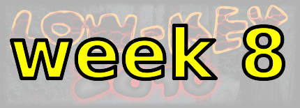

|
 |  |
| Enter your rider info and result here after the climb! |
Sorry, folks! Our insurance requires all riders wear helmets during the climb, and we follow the USA Cycling rule against ear buds or other head phones. Rock to tunes before the climb, perhaps, but we need riders to pay attention to what's happening during the climb...
This is a self-ride week, so you're on your own. But if you want to drive to the start of the route, we've conveniently placed that, for your pleasure, at the park & ride at the intersection of Arastradero and Page Mill just west of 280 and Page Mill Road, in Los Altos Hills (Google map).
Note this week you can do the course on your own any time Saturday you choose. However, the navigation is relatively complex, and if you're uncertain, it's a very good idea to ride with a group. There's plenty of time for regroups at the top of climbs built into the schedule, so no need to panic getting from one climb to the next.
Since you can start any time you want today, a good option to reach the start is Caltrain. From California Ave Caltrain station ride California Ave to Junipero Serra, turn left there, right on Page Mill, and ride that to the start of the course. the Caltrain Weekend Timetable is here.
This is a self-timed week, so we won't have check-in and results. However, there's still volunteer options! You can volunteer to help using our volunteer form! Thanks!!!
Low-Key is all about a group of friends riding up a hill together. It's like any other informal group ride, except we time you to the top and report the results on our web site. But we have no road closures, no lead vehicle, no follow vehicle. We are traffic, sharing the roads with other traffic, following the laws and courtesy which applies to traffic. This includes riding to the right of the road when practicable, and not crossing double yellows to pass riders or to get through corners faster. We're each responsible for our own actions out there, on and off the bike, both as users of the road as as courteous visitors to the neighborhoods we pass through. "Ceci n'est pas un race".